When an app or service goes down, engineers can get bombarded with alerts all related to the same problem.
Sorting through these alerts and sources for a root cause could be like searching for a needle in a haystack. Adding to the complexity, there were the over 20 change types coming from 9 different data sources. Our users wanted a way to see any change that could affect their service, regardless of where it came from.
Sometimes you get thrown to the wolves... but the wolves are actually really awesome teammates.
As senior designer at Datadog, my specialty was helping newly formed product teams take a basic working prototype and turn it into a generally available feature that customers loved. I joined the Change Tracking team just after a basic proof of concept was shipped internally on using a limited pool of data.
Before starting any design work, I flew to NYC to spend the entire week getting to know my new product team. I led the team in a workshop to align on project goals, intended user roles, and key workflows that we would be focusing on. During and after the workshop, I helped the team map out the existing user paths, group and categorize all the current and upcoming change types, and brainstormed possible solutions. From there, we used these artifacts to prioritize the work and set team goals.
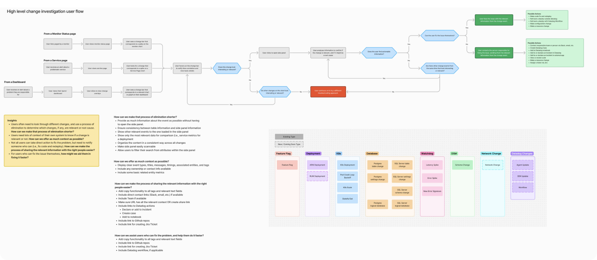
As I worked on the solutions below, I led a research campaign of 1:1 interviews with internal and external users. I fed the transcripts and an analysis of session replays to ChatGPT to produce a research report for the team, which we used to inform additional iterations.
I also ran multiple design reviews with executive stakeholders across engineering, product, and design.
This project had a lot of organizational and technical complexity, which required me to have a very adaptive design process. My general approach was to design with the engineers as they built things, and unblock them by solving design problems as they came up. Waterfall, this was not.
Part 1: Change Widgets
My first task after onboarding was to audit the existing data visualization component (“Change Widget”) and everywhere it occurred in the product. The solution: a simpler user flow consisting of a tailored Change Widget on the Service Page, User Dashboard, and User Monitor, all leading to a unified “Change Detail” view with more info about the change. Change types included Deployments, Feature Flags, Database Changes, Kubernetes Changes, and other relevant changes that could cause a service to go down.
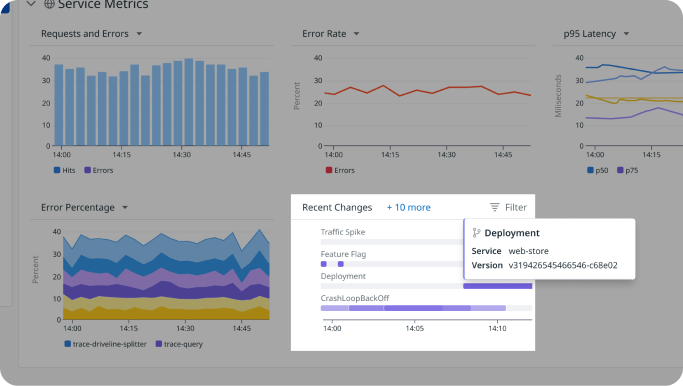
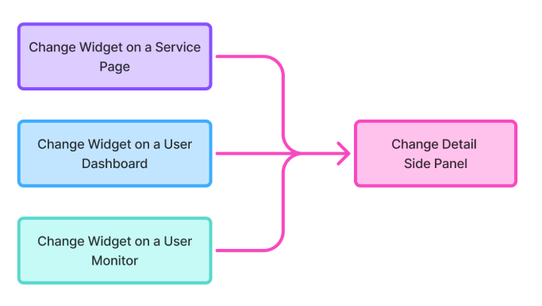
On the Service Page
Since the Change Detail views were functional, I decided to focus first on improving the widget design on the Service Page. After several iterations based on user and stakeholder feedback, I landed on the designs below. The overall idea is that users can see the time and duration of any relevant change to the service, hover to compare it to performance spikes on other charts, and click in to view more details about the change.
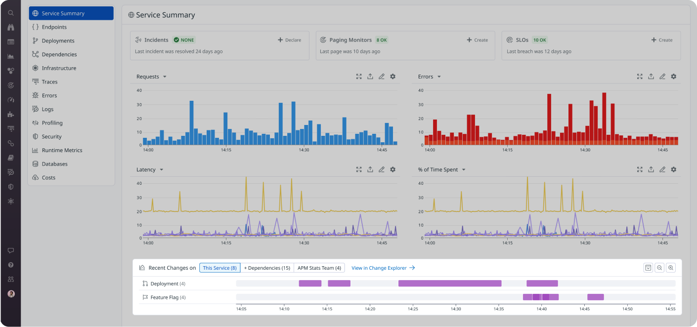
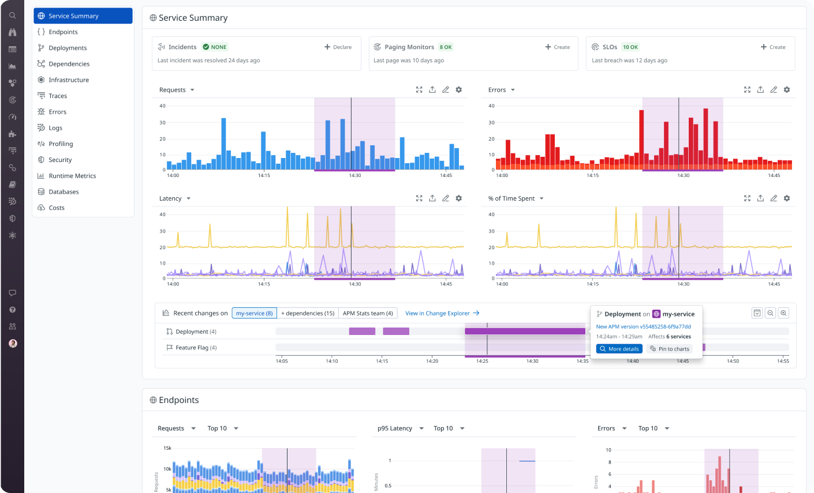
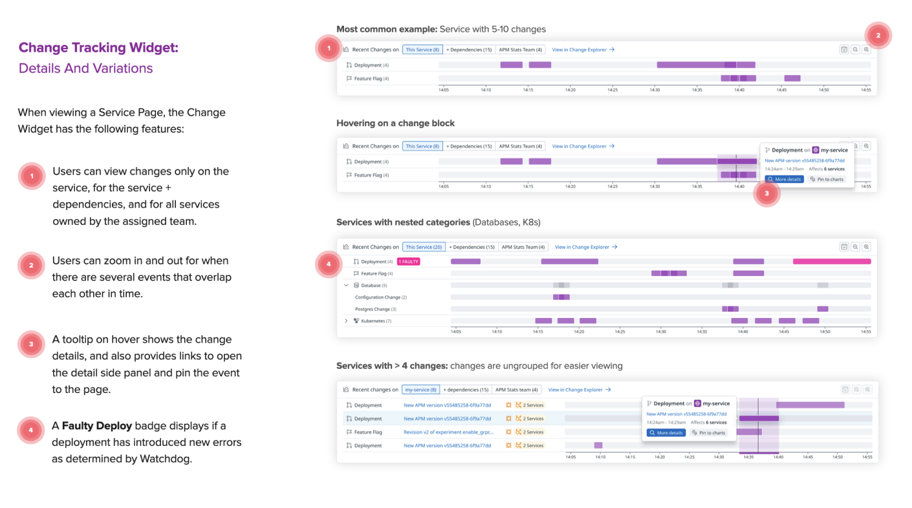
Side Panels
Designing a unified detail view (a.k.a., “side panel”) for several very different types of changes was no easy task. I designed a layout template based on questions users needed answers for: What happened, when did it happen, how bad is it, and who do I contact to get it resolved if I can’t do it myself? Each different change type could have its own relevant data and content while still retaining visual consistency.
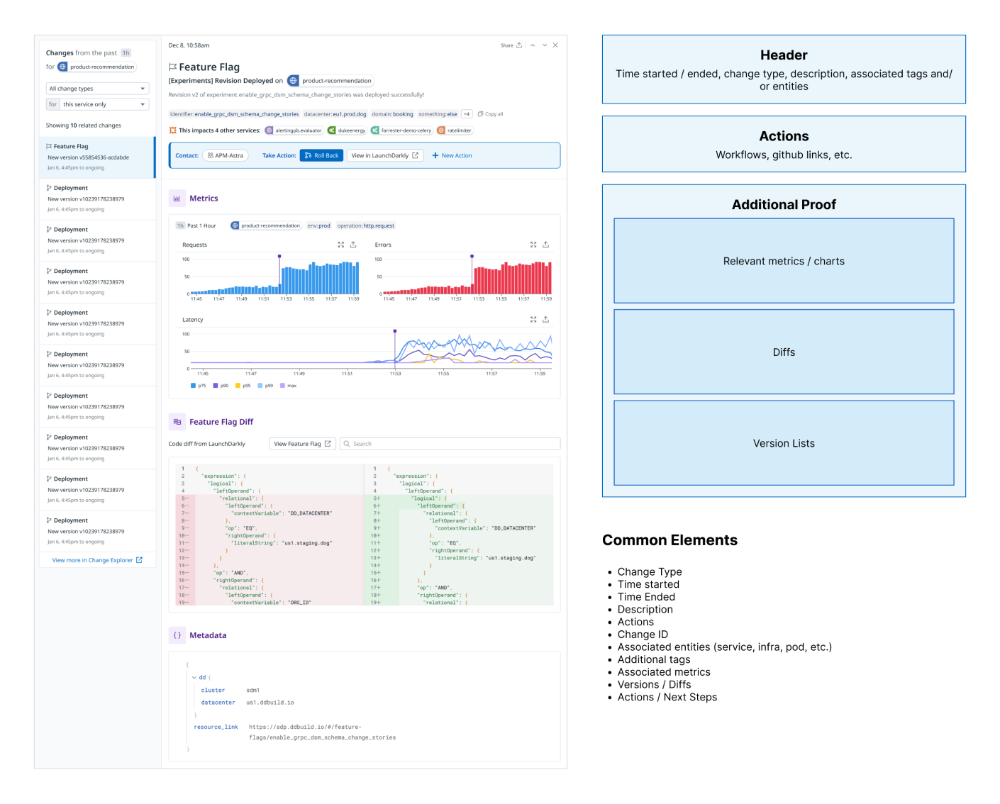
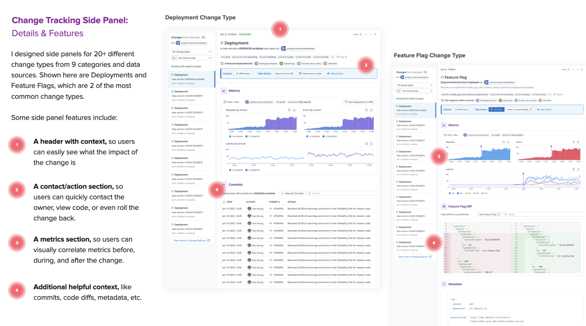
Monitors, Dashboards
As I mentioned above, I also adapted the widget design to work on Monitors and Dashboards.
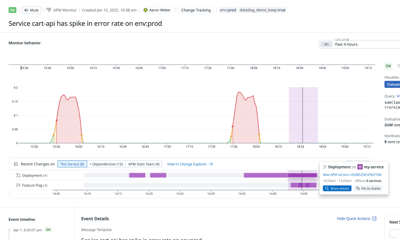
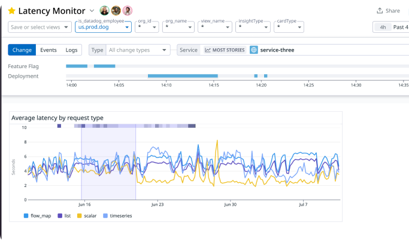
Part 2: Change Explorer
Seeing all the changes on a specific service is awesome, but what if there’s a problem that spans multiple services, or the exact services affected are unknown? Enter the “Change Explorer,” a way to see all changes across an entire instrumented system for a given time frame. This idea started as sketches I made with a staff engineer after asking ourselves the same questions.
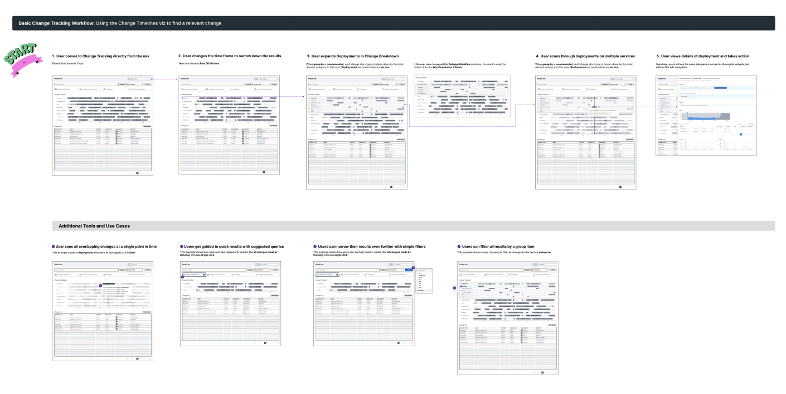
From there, I continued to work directly with engineers to design and build the Change Explorer into a feature that we could first ship internally, and to some early beta users. After several iterations, the screen below is what we shipped.
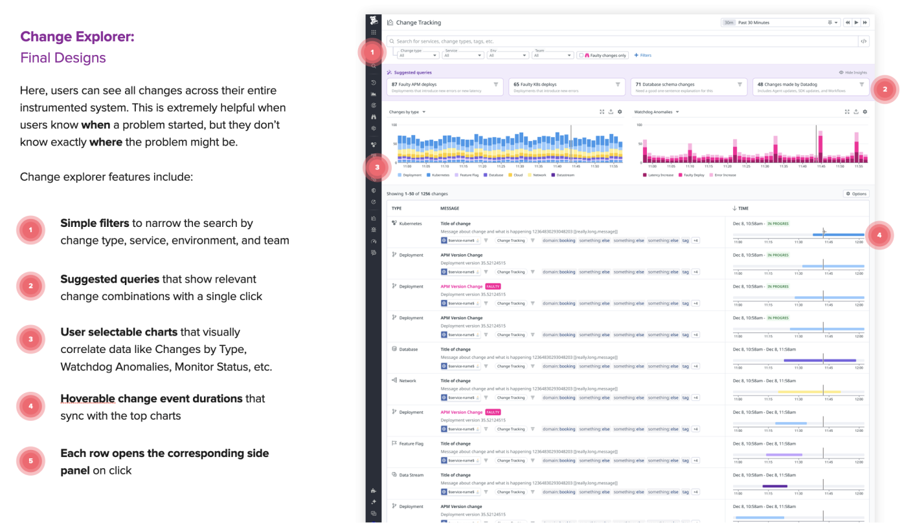
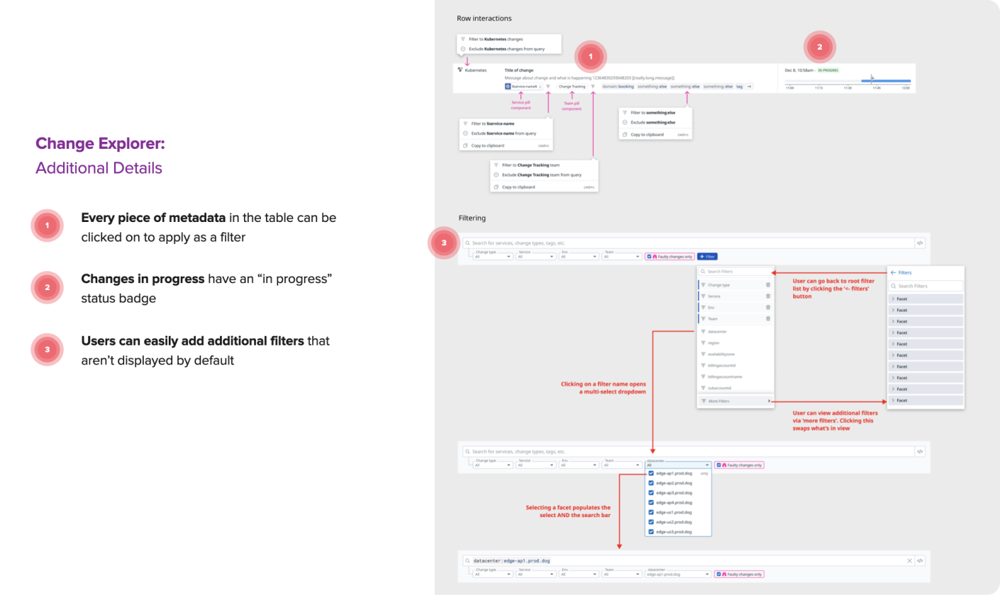
What impact did my design have?
- The internal and external users I spoke to had overwhelmingly positive design feedback.
- Many users wanted an additional list view that was separate from the widget. I was exploring this when I left Datadog.
- “This is such a technical project – I can’t believe how quickly Josh onboarded and started contributing!” (Note from EM).
- The research I conducted directly influenced the team’s roadmap for multiple quarters.